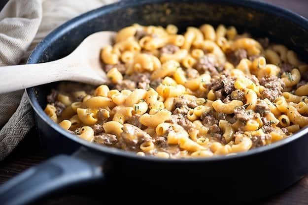

Cheeseburger Macaroni Hamburger Helper

Hamburger Helper has been an american household staple since it was initially released in 1971. These quick and easy boxed meals will not only have you feeling stuffed, every bite along the way will be delicious!
This hamburger helper is my personal favorite because its easy to make, super fast to get done, and it (technically) covers ALL the food groups in one dish! That's how i justify eating this more often than I probably should to myself. Follow these instructions to a complete meal for all the family!
Ingredients
- One Box Cheeseburger Macaroni Hamburger Helper
- 1 lb Ground Beef or Turkey
- 2 Cups Milk
- 1 1/2 Cups Hot Water
Instructions
- Cook ground beef or turkey in skillet over medium-high heat for about 6-8 minutes, breaking up and stirring, until browned.
- Drain the meat after browning and return to skillet.
- Stir in hot water, milk, provided sauce mix, and pasta. Heat until boiling.
- Once boiling, reduce heat. Cover and simmer for 10-12 minutes, stirring occasionally until pasta is tender.
- When pasta is at your preffered consistency, remove from heat and let cool before serving.
Enjoy!